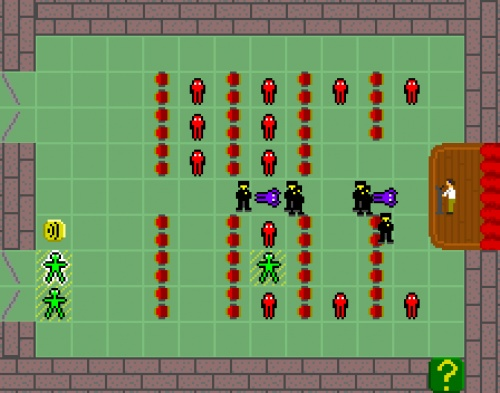

Indie Games and Political Critique
Peter Shultz
pashultz@gmail.com
Games as Critique
Just like any other medium, games reflect and promote ideology.
But games are special
- they let us play with systems
- they let us inhabit roles
They do other things too!
- they tell stories
- they entertain us
- they bore us
- they frustrate us
- etc.
But we’ll focus on those two
- playing with systems
- inhabiting roles
Part I: Representing systems
“Even though other inscription techniques may be partly or wholly driven by a desire to represent human or material processes, only procedural systems like computer software actually represent process with process.” —Ian Bogost
Oil God
Oil God
“To me the game was just wrong because it was basically supporting the theory of artificial scarcity: since the oil companies tend to increase their profits after disasters and turmoils, there is a sort of disembodied will, connected to the oil industry that is actually causing these turmoils and disasters. I think that statement is partially true but above all it absolutely misleading if you want to explain the rise in oil prices.”
—Paolo Pedercini (aka Molleindustria)
Oiligarchy
Newsgames: Editorial simulation
http://www.colbertnation.com/the-colbert-report-videos/91012/august-07-2007/ian-bogost
September 12th, by Gonzalo Frasca
The Rhetoric of Failure
“Such games present a scenario that can't be won under the rules provided. These games make a statement about those rules, arguing that they are insufficient for the task to which they are currently being put.”
—Ian Bogost
“Execution,” by Jesse Venbrux
WarGames (1983)
The Banalization of War
Full Spectrum Warrior
“FSW [Full Spectrum Warrior]’s double life as actual trainer and virtual toy, we argue, aptly demonstrates the ‘banalization of war’ (Hardt and Negri 2000, 12)—the enveloping sociocultural-emotional process habituating populations to the perpetual conflict of the war on terror.”
—Dyer-Witheford & de Peuter, p. 99
”The big lie of war-as-video-game”
“It is essential to FSW that time can be reversed, and every mistake undone; the ‘save-die-restart’ sequence makes Alpha and Bravo immortal. This is, of course, the big lie of war-as-video-game.
“There are other subsidiary lies in FSW’s virtual war. […] It is war without mutilation or post-traumatic stress disorder. It is also war without moral dilemmas. And there are almost no civilians. The miracle of Zekistan is that its streets are deserted and houses empty, apart from the ubiquitous Tangos (who all die instantaneously when hit). Air and artillery strikes do not hit wedding parties. There is no collateral damage. War is peace.”
Dyer-Witheford & de Peuter, pp. 112–113
The message of commercial war games
“War is horrible and badass”
—Ian Bogost
World War I Medic, by Tarn Adams
“Saving even a single soul—climbing out of the trench, grabbing a fallen body and lugging it back to safety under a senseless hail of bullets—is incredibly difficult.” —Anna Anthropy
Spec Ops: The Line
“Unlike most shooters, Spec Ops: The Line wonders what kind of person likes virtual killing enough to spend hours engaged in it. It bothers to ask, ‘Aren't we all a little sick and crazy to want this?’” —Tom Bissell
Critique or glorification?
Can a game be too much fun?
Prison Architect
“We have a chapter where a politician decides that he would like to run an experiment. He says to you that you should try and create a full reform prison where budget is no object. Assuming money was no factor, how much could you actually do with a reform prison? […]
“And then when people come to play the sandbox, we’re hoping that we will have seeded their mind a little bit with some of the moral issues behind each of the decisions they might make. We’ll let the player build an execution chamber in the sandbox, and I’ve no doubt that people are going to build vast execution prisons, but I don’t really have a problem with that.”
Chris Delay, lead designer and programmer
Hotline: Miami
Cow Clicker
The limits of system-based critique
- To what extent is the meaning of the rules shaped by aesthetic presentation?
- Can game mechanics carry a message in themselves?
SimCity and political neutrality
“So that the core agenda that I've got with this is to make a simulation that is a landscape that the player can explore, metaphorical landscape—you push on it and see what it happens. It's absolutely not to make an ideologically channeled experience where you have to get all pious and make the right environmental choices to win because that would be, frankly, absurd, as a gameplay experience. That becomes an exercise in propaganda, as opposed to giving you a simulation to explore.”
—Ocean Quigley, creative director of SimCity (2013)
Disruptive game mechanics
“Mechanics are politics. We’ve been playing straight games.”
—Joli St. Patrick and Joe Mcdaldno, “Beyond Representation: Queer Mechanics in Tabletop Games”
Disruptive game mechanics
- The Fruitful Void: Your game is about whatever it is conspicuously missing.
- Character non-monogamy: You don’t own the character exclusively.
- Enshrining the preposterous: Games don’t need to be physics engines
“Keep Me Occupied,” by Anna Anthropy
10-minute game design challenge
- work in groups of three or four
- left: immigration, right: healthcare/insurance
- whom/what does the player control?
- what systems do they interact with?
- what do they learn or understand through playing the game?
Part II: Inhabiting roles
Papers, Please, by Lucas Pope

Papers, Please, by Lucas Pope
- What changes over the course of the game?
- What do its systems convey?
- What about the player’s role?
- What would be different if it were set in a made-up America rather than a made-up Eastern Bloc country?
Cart Life, by Richard Hofmeier
Cart Life, by Richard Hofmeier
“The rules of the game are learned by living in its world, leading to many sad tales of cart vendors who bought the wrong ingredients, mothers that lost custody of their child, and immigrants so overworked that they forgot to feed their cat for days. Cart Life suggests these things happen in life more than we care to acknowledge.”
—Allistair Pinsof, Destructoid.com
Cart Life, by Richard Hofmeier
“I’ve spent many days making change with a cash register, bucking hay bales, collating documents, book binding, editing video, screen printing, transcribing audio, taping boxes, stacking huge piles of newspapers, washing dishes. I’ve had a lot of these jobs where they seem impossibly nuanced for the first day or two, but you just pick it up. Isn’t that funny? How we’re all so work-averse, but we can do anything with enough practice.”
Cart Life, by Richard Hofmeier
“Police Brutality,” by Jason Rohrer
“Police Bear,” by Anna Anthropy

Gender in games
- Mainstream games have not done well representing women
- Anita Sarkeesian (Feminist Frequency) on the “Damsel in Distress” trope

Gender in games
- Anna Anthropy: “The problem with videogames is that they’re created by a small, insular group of people.”
Anna Anthropy: We need different people making games
“Many of these games will be mediocre, of course; the majority of work in any form is mediocre. But we’ll see many more interesting ideas just by the sheer mathematical virtue of so many people producing games without the commercial obligations industry games are beholden to. […] And even if a game isn’t original, it’s personal, in the way a game designed to appeal to target demographics can’t be. And that’s a cultural artifact our world is a little bit richer for having.”
Twine and minorities
Game design challenge, round 2
This time, focus on persuasion through role
- work in groups of three or four
- left: healthcare/insurance, right: immigration
- whom/what does the player control?
- what systems do they interact with?
- what do they learn or understand through playing the game?
Part III: Tower of the Blood Lord
Tower of the Blood Lord, by Michael Lutz
- violence
- simulation
- consumer culture
- class
The Takeaway
- Games are political speech.
- More and more people are speaking.
- You could be one of them!